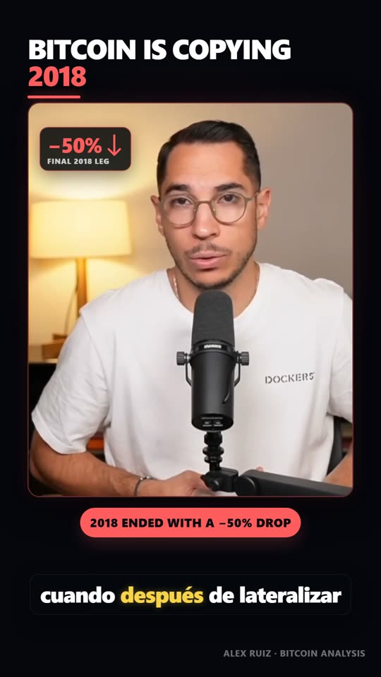
Estilo oscuro · acento rojo · 56 sTodo lo que sigue procede de material ya publicado o de trabajo ya entregado. Nada es una maqueta. Pulsa cualquier pieza de la mesa para examinarla.

Estilo oscuro · acento rojo · 56 s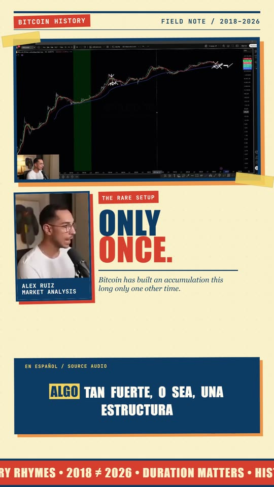
Estilo editorial · crema · 53 s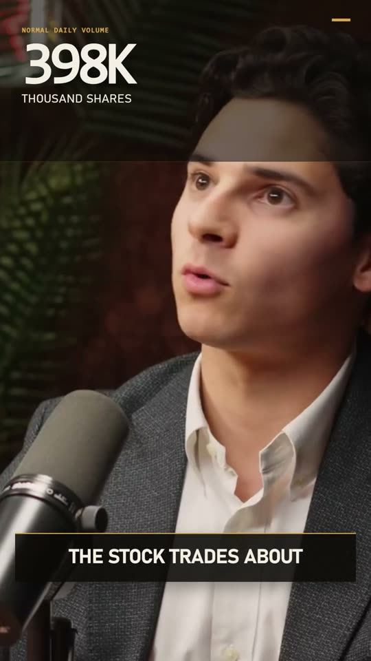
Canal externo · referencia · 56 s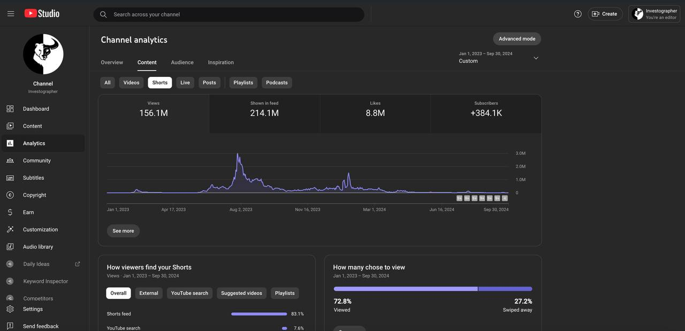
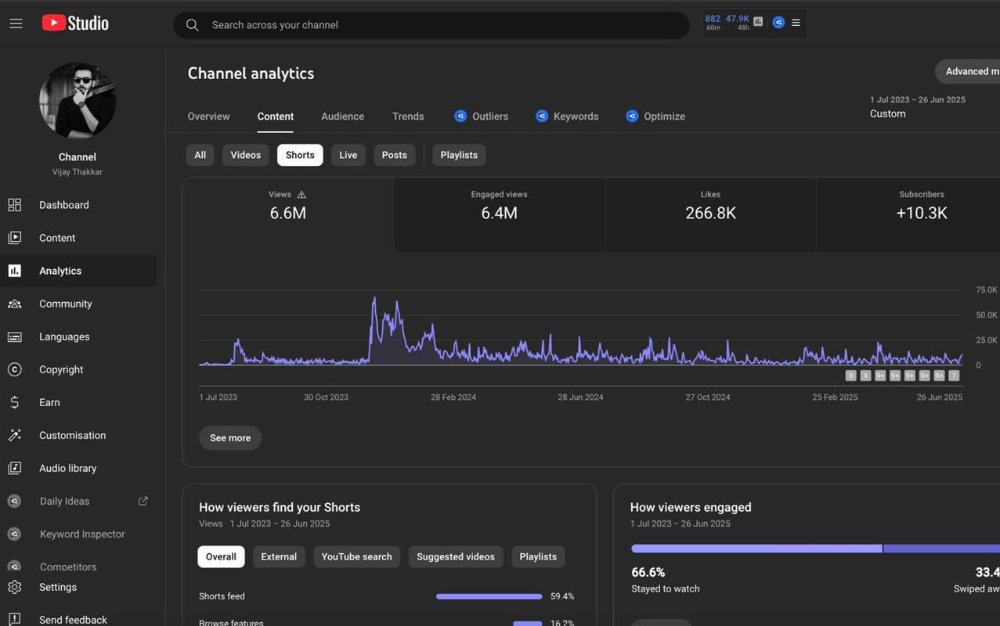
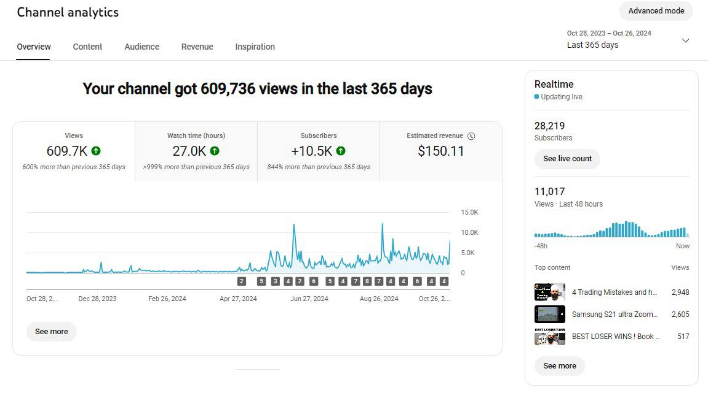
Pieza montada a partir de metraje propio de Alex. Corte ajustado sobre forma de onda, subtítulo en español, kit oscuro con acento rojo.
El vídeo entra a texto con marca de tiempo por palabra. Nada se selecciona de memoria ni por intuición, lo que significa que el criterio no cambia según quién esté montando ese día.
Se localizan los momentos que se sostienen solos: una tesis, una cifra, un giro, una comparación histórica. Si el fragmento necesita contexto previo para entenderse, se descarta — por bueno que sea.
Los límites se ajustan al silencio real y no a la palabra más próxima. Sin entradas cortadas, sin colas muertas. Es la diferencia entre un corte que respira y uno que suena a recorte.
Tipografía, color, ritmo de subtítulo y tratamiento de gráficos quedan definidos antes de montar nada. Por eso veinte piezas seguidas parecen del mismo canal y no de veinte editores distintos.
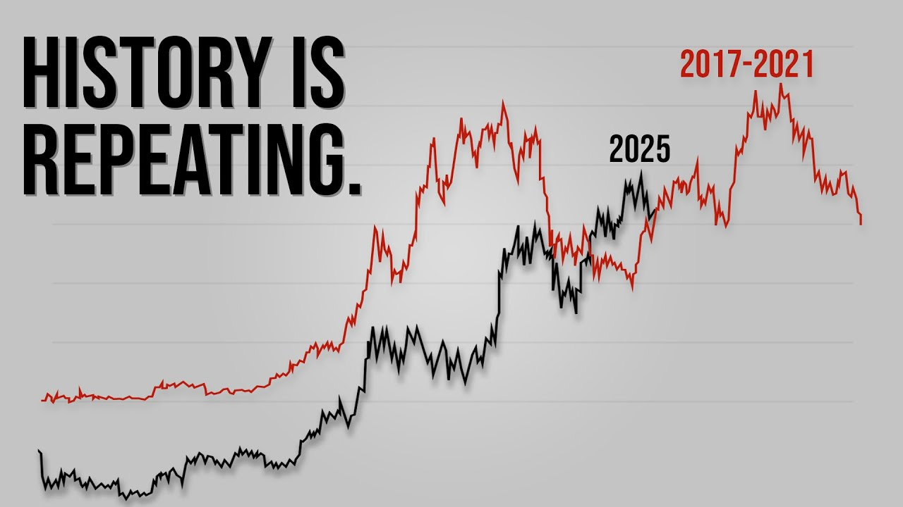
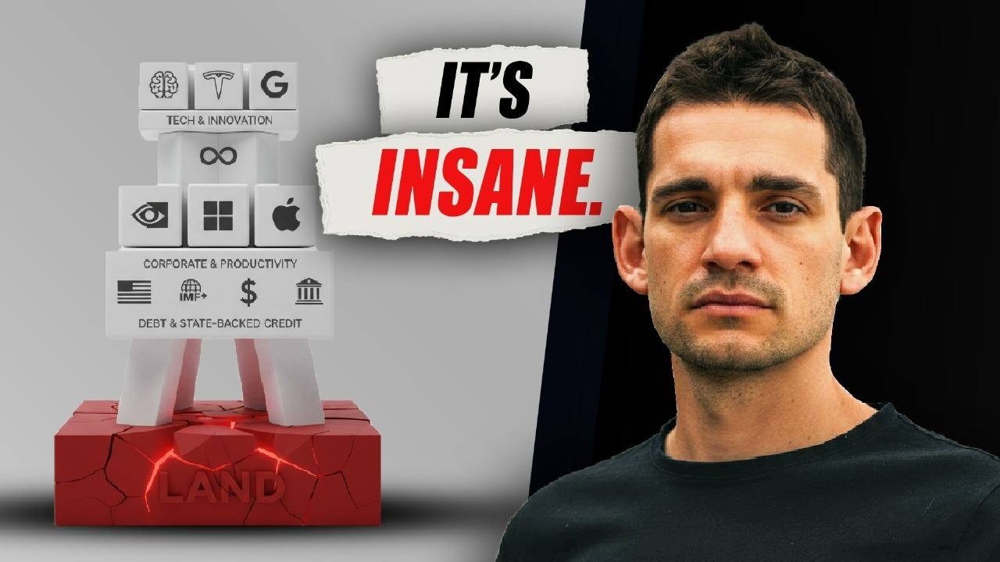
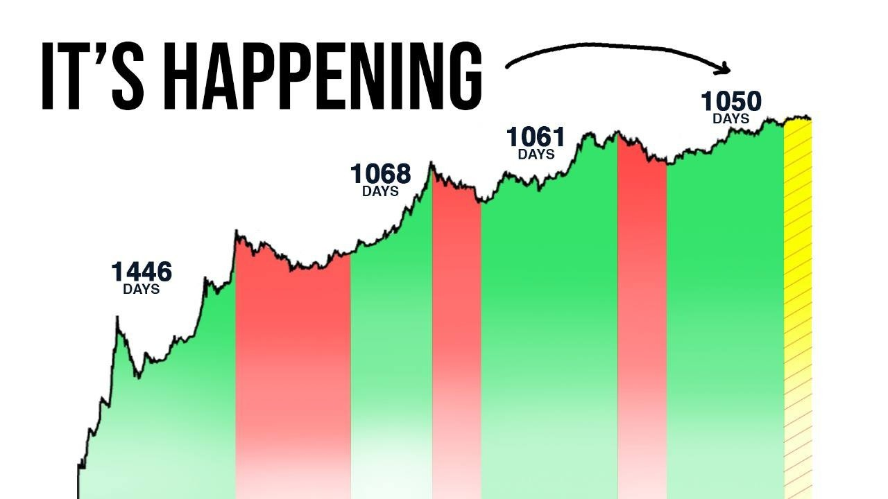
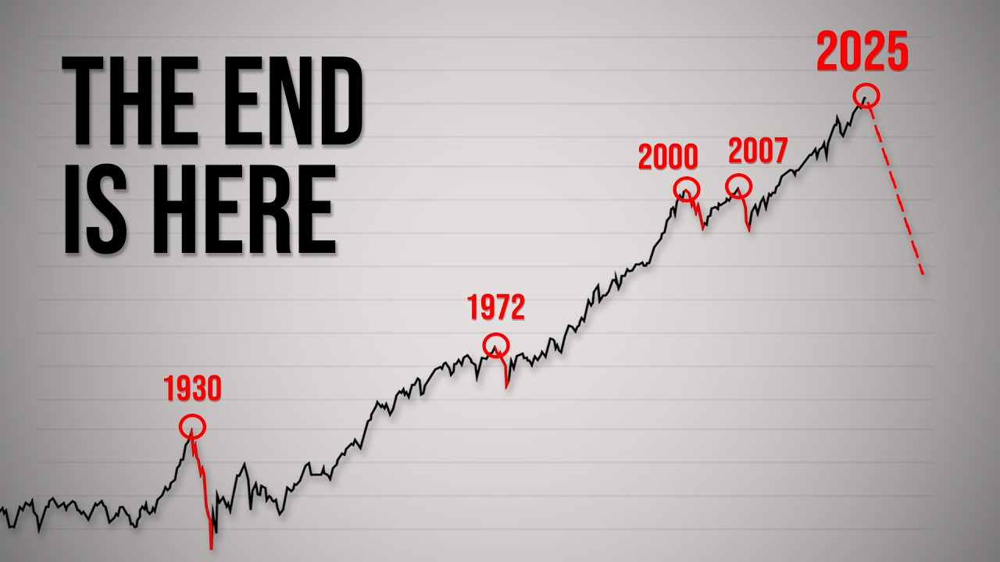
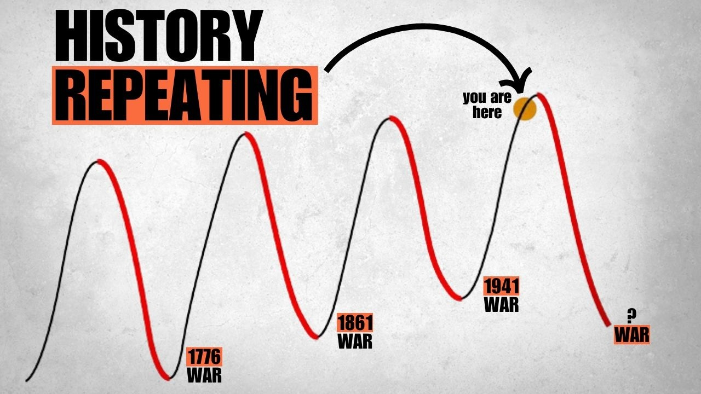
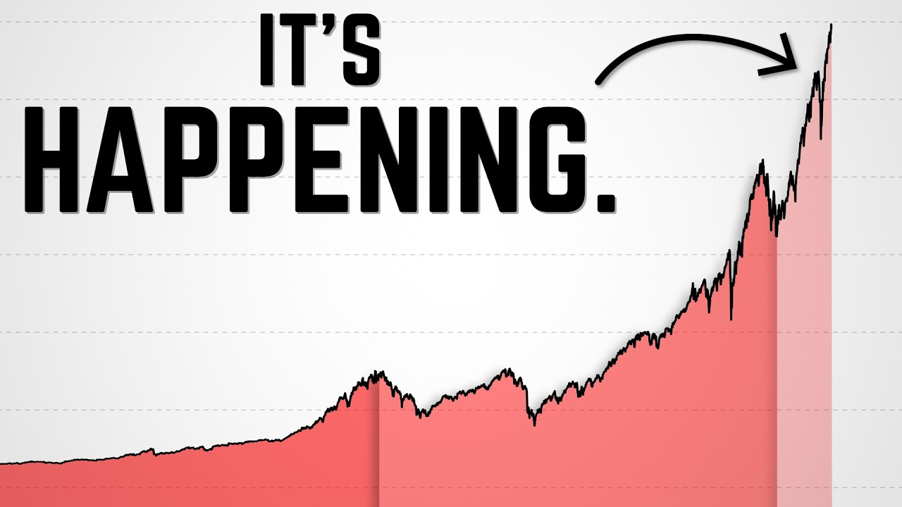
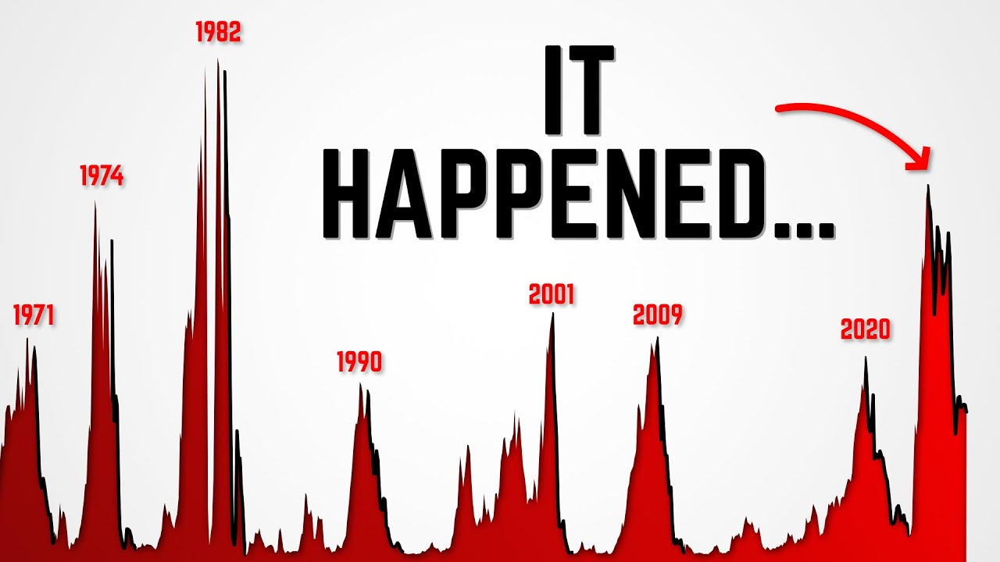
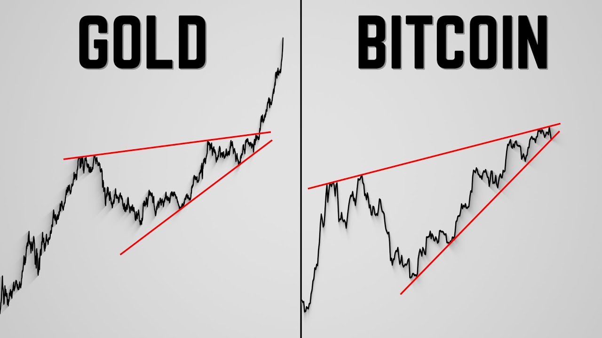
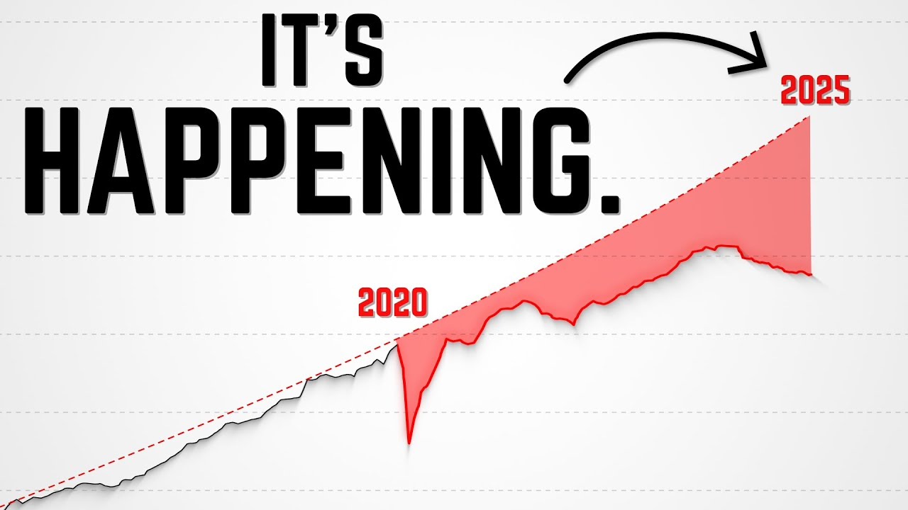
Las cifras en pantalla se renderizan desde datos reales, no se generan con IA. Por eso un número nunca sale deformado — que en un canal financiero es la diferencia entre parecer serio y no parecerlo.
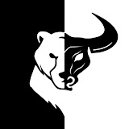
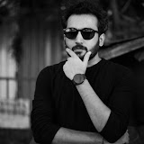
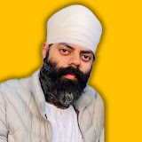
Los canales financieros atraen un tipo concreto de fraude: rings de tickers inventados, suplantación del propio canal y falsos testimonios de mentores. No es ruido — es captación activa sobre vuestra audiencia, y aparece en los comentarios donde más confianza hay.
Un asistente entrenado con vuestros propios vídeos y vuestro tono, que cita la fuente en cada respuesta. Absorbe más de 20 horas semanales de soporte y está en producción en tres semanas. En el vídeo responde a una pregunta real de un miembro, sin cortes.
Un buen editor interno edita bien, ahí no hay discusión. La diferencia está en el volumen que se sostiene y en las capas de alrededor, que es donde no suele llegar un equipo pequeño.
IA en las partes donde no se nota, trabajo humano donde sí. Eso sostiene 21+ piezas semanales sin el coste de dos o tres incorporaciones.
Estudio propio: series reales, anotaciones, cifras exactas. Renderizado desde datos, así que los números nunca se deforman.
Asistente entrenado con vuestros propios vídeos y vuestro tono, con cita de fuente en cada respuesta. Absorbe más de 20 horas semanales de soporte. Tres semanas hasta producción.
11.790 comentarios fraudulentos retirados en diecisiete días. Funciona en segundo plano, sin que nadie de vuestro equipo tenga que mirarlo.
Trabajamos por capas, así que se puede empezar por una sola — solo cortes, solo gráficos, solo moderación — y ampliar si funciona. Si al ver esto creéis que aportamos algo distinto a lo que ya montáis internamente, agendamos cuando os venga bien. Si no encaja, decidlo sin problema — las piezas de Alex se quedan con vosotros igualmente.